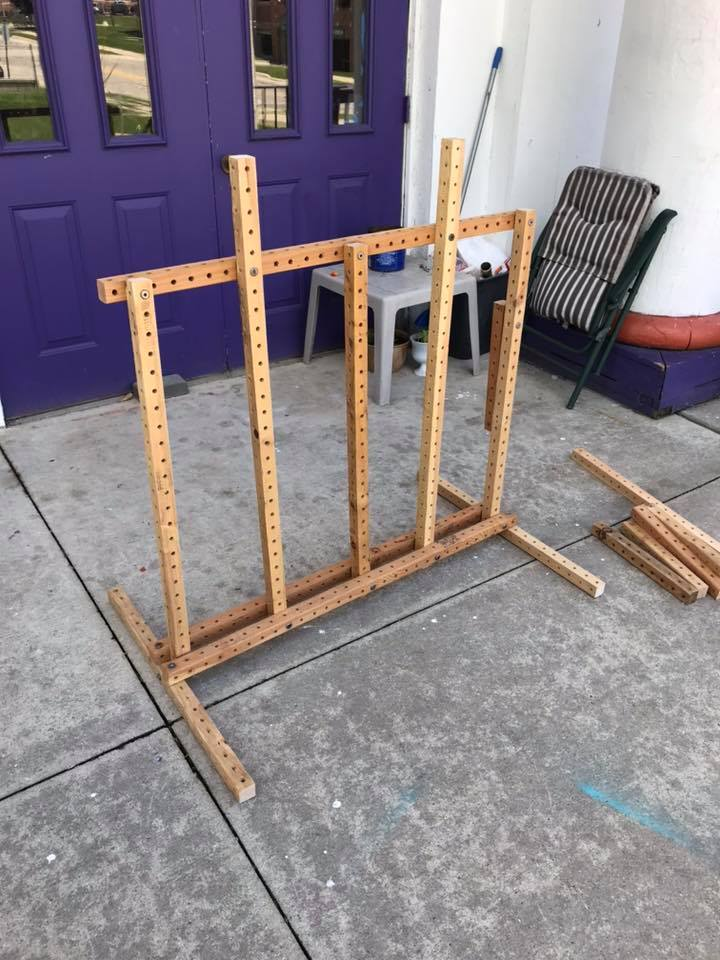
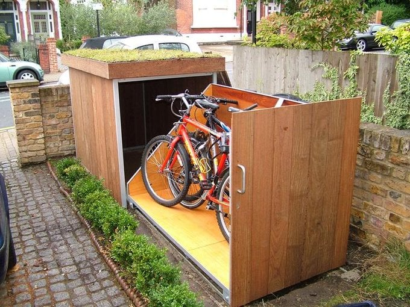

bicycle racks revision 7859
^ Projects infobox ^^
| image | Bicycle-rack.scad.png |
| designers | [[user:tim|Timothy Schmidt]] |
| date | 2018 |
| vitamins | |
| materials | |
| transformations | |
| lifecycles | |
| tools | [[wrenches|Wrenches]] |
| parts | [[frames|Frames]], [[nuts|Nuts]], [[bolts|Bolts]], [[end_caps|End caps]], [[plates|Plates]] |
| techniques | [[tri_joints|Tri joints]], [[shelf_joints|Shelf joints]] |
| git | |
| files | |
Introduction
A bicycle parking rack, usually shortened to bike rack and also called a bicycle stand, is a device to which bicycles can be securely attached for parking purposes. A bike rack may be free standing or it may be securely attached to the ground or some stationary object such as a building. Indoor bike racks are commonly used for private bicycle parking, while outdoor bike racks are often used in commercial areas. General styles of racks include the Inverted U, Serpentine, Bollard, Grid, and Decorative. The most effective and secure bike racks are those that can secure both wheels and the frame of the bicycle, using a bicycle lock.
Challenges
Approaches

